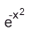
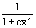
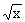
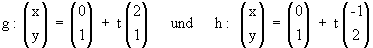

| KANTONSSCHULE REUSSBÜHL | Maturitätsprüfungen 1997 (Be / Es / Ko) |
M a t h e m a t i k Typus A/B
Bemerkungen: Jede Aufgabe soll auf einer neuen Seite begonnen werden.
Zeit: Drei Stunden.
Jede vollständig gelöste Aufgabe wird mit maximal 10 Punkten bewertet.
Für 40 Punkte wird die Note 6 erteilt.
Viel Glück!
1. Gegeben ist die Funktion mit der Gleichung y = f(x) = 
a) Skizzieren Sie den Graphen von f im Intervall [0;2] , wobei die Einheitsstrecke auf den Koordinatenachsen 6 cm lang sein soll.
b) Ein Rechteck soll so zwischen die x-Achse und den
Graphen von f eingefügt werden, dass sich zwei seiner Seiten auf den positiven
Koordinatenachsen befinden und ein Eckpunkt auf dem Graphen von f liegt.
Wie gross ist der maximale Flächeninhalt dieses Rechtecks ?
c) Der Graph von f kann durch den Graphen einer zweiten
Funktion g mit der Gleichung g(x) =  angenähert werden. Bestimmen Sie die Konstante c so, dass der Graph
von g durch den Wendepunkt des Graphen von f geht.
Skizzieren Sie dann auch den Graphen von g in das Koordinatensystem von a).
2. Zwei Basketballspielerinnen B und C trainieren Freiwürfe. B trifft durchschnittlich 2 von 3 Ballen in den Korb, C bloss 2 von 5 Bällen.
a) B wirft dreimal hintereinander auf den Korb. Mit welcher Wahrscheinlichkeit erzielt sie dabei genau einen Treffer ?
b) Wieviele Male muss C mindestens auf den Korb werfen, um mit einer Wahrscheinlichkeit von mindestens 99.9 % mindestens einmal zu treffen ?
c) B und C werfen je dreimal auf den Korb. Wie gross ist die Wahrscheinlichkeit, dass dabei B mehr Treffer als C erzielt ?
d) B und C werfen abwechslungsweise je einen Ball auf den Korb. Wer als erste einen Treffer erzielt, gewinnt dieses Turnier, welches unter Umständen ewig dauern kann. Die schwächere Spielerin C darf beginnen. Mit welcher Wahrscheinlichkeit gewinnt C dieses Turnier ?
3. Gegeben sind die drei Punkte A(4/2/5), B(6/0/6) und C(7/2/8).
a) Ergänzen Sie das Dreieck ABC zum Parallelogramm ABCD und zeigen Sie: ABCD ist sogar ein Quadrat!
b) Bestimmen Sie den Punkt S in der (x,z)-Ebene so, dass S als Spitze einer geraden quadratischen Pyramide mit der Grundfläche ABCD aufgefasst werden kann.
c) Berechnen Sie den Winkel Alpha zwischen Seitenkante und Grundfläche der Pyramide.
d) Die Pyramide besitzt eine Umkugel. Wie lautet die Gleichung dieser Kugel?
4. Gegeben sind die Funktionen mit Gleichungen y = f(x) = + 4 und y = g(x) = x2 - 3.5x + 4 .
a) Zeigen Sie, dass die beiden Graphen zwei Schnittpunkte mit ganzzahligen Koordinaten haben
b) Die zwei Graphen schliessen ein Flächenstück ein. Wie gross ist sein Inhalt?
c) Eine Gerade h gehe durch den Punkt (0/4). Berechnen Sie ihre Steigung derart, dass h das Flächenstück von Aufgabe b) halbiert.
d) Das Flächenstück von Aufgabe b) rotiere nun um die x-Achse und erzeugt so einen Rotationskörper. Wie gross ist sein Volumen?
5. Zwei voneinander unabhängige Aufgabenteile:
a) Bestimmen Sie im Intervall [0 , 2Pi] die Koordinaten der
Tiefpunkte der Funktion mit Gleichung
y = f(x) = 2 sin2x + sin(2x) + cos(2x).
b) Ein Kreis geht durch den Punkt P(0/9) und berührt die beiden Geraden  .
Berechnen Sie die Koordinaten des Mittelpunktes dieses Kreises k. Es muss nur eine Lösung angegeben werden.